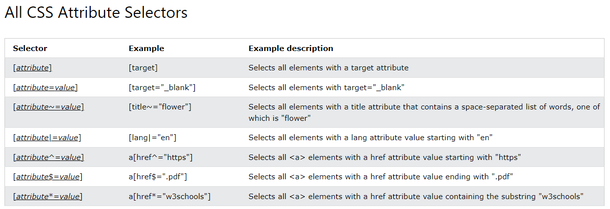

Seletores do CSS
Há 5 categorias de seletores:
- Seletores simples: seleciona elementos com base no nome, na id ou na classe.
- Seletores combinados: seleciona elementos com base em um relacionamento específico entre eles.
- Seletores de pseudo-classe: seleciona elementos com base em um estado ou comportamento.
- Seletores de pseudo-elemento: seleciona e estiliza uma parte de um elemento.
- Seletores de atributos: seleciona elementos com base em um atributo ou valor de atributo.
Seletores simples
Os seletores simples são os mais comuns e usados. Pode-se usar o tipo, a id ou a classe para selecionar elementos.
Os seletores simples de id usam o atributo para estilizar um único elemento nas páginas do site, já que o atributo id deve ser exclusivo.
Para selecionar um elemento com uma id específica, use o caractere cerquilha (#) e o nome da id do elemento. P.ex.:
#myId {
text-align: center;
color: red;
}
O seletor de classe estiliza elementos HTML com um atributo de classe específico.
Para selecionar elementos com uma classe especifica, digite um ponto (.) e o nome da classe do elemento. P.ex.:
.myClass {
font-size: 18pt;
color: blue;
}
Também é possível definir que apenas alguns elementos HTML devem ser afetados por uma classe:
p.myClass {
margin-left: 10px;
font-family: Arial, Helvetica, sans-serif;
}
Ou, ainda, um elemento pode ter mais de uma classe:
<html>
<head>
<style>
p.center {
text-align: center;
color: red;
}
p.large {
font-size: 300%;
}
</style>
</head>
<body>
<h1 class="center">This heading will not be affected</h1>
<p class="center">This paragraph will be red and center-aligned.</p>
<p class="center large">This paragraph will be red, center-aligned, and in a large font-size.</p>
</body>
Também podemos usar o seletor universal (*) para selecionar todos os elementos na página.
* {
font-size: 18pt;
color: blue;
}
E é possível, ainda, agrupar elementos que têm o mesmo estilo usando vírgulas (o que é chamado de "lista"). Este exemplo coloca tamanho de fonte de 18 pontos e a cor azul em cabeçalhos h1, h2 e parágrafos:
h1, h2, p {
font-size: 18pt;
color: blue;
}
Observação: ao agrupar seletores dessa forma, se a sintaxe de um dos seletores for inválida, toda a regra será ignorada!
Seletores combinados
Um seletor pode conter mais de um seletor simples. E podemos usar os quatro combinadores a seguir para uni-los:
Descendente (espaço)
Corresponde todos os elementos que são descendentes do elemento especificado. P.ex.:
div p {
background-color: yellow;
}
Filho (>)
Corresponde todos os elementos que são filhos do elemento especificado. P.ex.:
div > p {
background-color: yellow;
}
Adjacentes (+)
Seleciona um elemento que está diretamente a seguir do elemento especificado. P.ex.:
div + p {
background-color: yellow;
}
Os elementos adjacentes devem ter o mesmo pai. Muito usado para adicionar espaço entre os parágrafos ou itens de lista somente se um elemento é um irmão próximo de outro elemento pai.
Irmão geral (~)
Seleciona todos os elementos que são os irmãos próximos de um elementos especificado. P.ex.:
div ~ p {
background-color: yellow;
}
Seletores de pseudo-classe
Seletores de pseudo-classe permitem estilizar elementos usando um determinado estado desse elemento. Por exemplo:
- Estilizar um elemento ao passar o mouse sobre ele (
:hover) - Estilizar os links de forma diferente caso já tenham sido clicados (
:visited) - Estilizar um elemento quando recebe o foco (
:focus)
Use dois-pontos (:) para definir uma pseudo-classe.
a:hover {
background-color: yellow;
}
Observação: a:hover DEVE vir após a:link e a:visited nas definições do CSS para funcionar! a:active DEVE vir após a:hover para funcionar! Os nomes de pseudo-classes não diferenciam maiúsculas de minúsculas.
Também é possível combinar pseudo-classe e ids ou classes. P.ex.:
a#myId:first-child {
background-color: yellow;
}
p.myClass:hover {
background-color: blue;
}
Mais informações sobre pseudo-classes em Web.dev.
Exemplos de pseudo-classes:
Consulte a lista de pseudo-classes no MDN para saber mais.
| Selector | Example | Example description |
|---|---|---|
| :active | a:active | Selects the active link |
| :checked | input:checked | Selects every checked <input> element |
| :disabled | input:disabled | Selects every disabled <input> element |
| :empty | p:empty | Selects every <p> element that has no children |
| :enabled | input:enabled | Selects every enabled <input> element |
| :first-child | p:first-child | Selects every <p> elements that is the first child of its parent |
| :first-of-type | p:first-of-type | Selects every <p> element that is the first <p> element of its parent |
| :focus | input:focus | Selects the <input> element that has focus |
| :hover | a:hover | Selects links on mouse over |
| :in-range | input:in-range | Selects <input> elements with a value within a specified range |
| :invalid | input:invalid | Selects all <input> elements with an invalid value |
| :lang(language) | p:lang(it) | Selects every <p> element with a lang attribute value starting with "it" |
| :last-child | p:last-child | Selects every <p> elements that is the last child of its parent |
| :last-of-type | p:last-of-type | Selects every <p> element that is the last <p> element of its parent |
| :link | a:link | Selects all unvisited links |
| :not(selector) | :not(p) | Selects every element that is not a <p> element |
| :nth-child(n) | p:nth-child(2) | Selects every <p> element that is the second child of its parent |
| :nth-last-child(n) | p:nth-last-child(2) | Selects every <p> element that is the second child of its parent, counting from the last child |
| :nth-last-of-type(n) | p:nth-last-of-type(2) | Selects every <p> element that is the second <p> element of its parent, counting from the last child |
| :nth-of-type(n) | p:nth-of-type(2) | Selects every <p> element that is the second <p> element of its parent |
| :only-of-type | p:only-of-type | Selects every <p> element that is the only <p> element of its parent |
| :only-child | p:only-child | Selects every <p> element that is the only child of its parent |
| :optional | input:optional | Selects <input> elements with no "required" attribute |
| :out-of-range | input:out-of-range | Selects <input> elements with a value outside a specified range |
| :read-only | input:read-only | Selects <input> elements with a "readonly" attribute specified |
| :read-write | input:read-write | Selects <input> elements with no "readonly" attribute |
| :required | input:required | Selects <input> elements with a "required" attribute specified |
| :root | root | Selects the document's root element |
| :target | #news:target | Selects the current active #news element (clicked on a URL containing that anchor name) |
| :valid | input:valid | Selects all <input> elements with a valid value |
| :visited | a:visited | Selects all visited links |
Observação: O símbolo de dois-pontos duplo (::) é o que diferencia um pseudo-elemento de uma pseudo-classe, mas como essa distinção não estava presente em versões mais antigas das especificações do CSS, os navegadores oferecem suporte a único dois-pontos para os pseudo-elementos originais, como :before e :after para ajudar com a retrocompatibilidade em navegadores antigos como o IE8.
Seletores de pseudo-elemento
Consulte a lista de pseudo-elementos no MDN para saber mais.
Usados para estilizar partes de um elemento. Por exemplo, a primeira letra ou linha de um elemento, ou inserir conteúdo antes ou depois de um elemento.
Use dois dois-pontos (::) para definir um pseudo-elemento.
A lista a seguir apresenta alguns dos pseudo-elementos e suas propriedades de CSS correspondentes:
::first-line, estiliza a primeira linha de um texto: font properties, color properties, background properties, word-spacing, letter-spacing, text-decoration, vertical-align, text-transform, line-height, clear.::first-letterestiliza a primeira letra de um texto: font properties, color properties, background properties, margin properties, padding properties, border properties, text-decoration, vertical-align (apenas se "float: none"), text-transform, line-height, float, clear.::before, insere conteúdo antes do elemento ao qual foi aplicado.::after, insere conteúdo depois do elemento ao qual foi aplicado.::marker, estiliza os marcadores de uma lista.::selection, estiliza uma parte selecionada do texto: color, background, cursor, outline.::placeholder, estiliza o texto de um campo de entrada.::backdrop, para estilizar o espaço entre o elemento e o restante da página de elementos que aparecem em tela cheia, comodialogouvideo, isto é, estiliza o plano de fundo.
Também é possível combinar pseudo-elementos a classes com a sintaxe elemento.classe::pseudo-elemento {propriedade: valor;}.
Mais informações sobre pseudo-elementos em Web.dev.
Seletores de atributos
Usados com elementos que têm determinado atributo HTML ou que têm um determinado valor de atributo. Para usá-lo envolva o seletor entre colchetes ([ ]). P.ex.:
[data-type='primary'] {
color: red;
}
Esta regra procura por todos os elementos que têm o atributo data-type com o valor primary, como este: <div data-type="primary"></div>.
Também é possível procurar somente pela propriedade, sem um valor definido:
[data-type] {
color: red;
}
<div data-type="primary">
<div data-type="secondary">
Também é possível usar seletores de atributos diferenciando as maiúsculas de minúsculas com o operador s. Isso significa que se houver um elemento HTML com data-type: Primary;, em vez de primary, ele não receberá o que foi definido na regra. Para fazer o oposto, isto é, selecionar minúsculas em vez de maiúsculas, use o operador i. Por exemplo:
[data-type='primary' s] {
color: red;
}
[data-type='Primary' i] {
color: red;
}
Além disso, há operadores que correspondem a partes de cadeias de caracteres dentro dos valores dos atributos. Por exemplo:
/* An href that contains "example.com". The value does not have to be a whole word! */
[href*='example.com'] {
color: red;
}
/* An href that starts with https */
[href^='https'] {
color: green;
}
/* An href that ends with .com */
[href$='.com'] {
color: blue;
}
/* A title that contains a space-separated list of words, one of which is "flower". This will match elements with title="flower", title="summer flower", and title="flower new", but not title="my-flower" or title="flowers". */
[title~="flower"] {
border: 5px solid yellow;
}
/* A class that contains "top" or "top-" */
[class|="top"] {
background: yellow;
}
Seletores de atributo são úteis para estilizar formulários que não têm classes ou IDs.
Resumo:

Especificidade
Se mais de uma regra de CSS aponta para o mesmo elemento, o seletor com maior valor de especificidade ganha e sua declaração de estilo será aplicada ao elemento.
Todo seletor tem seu lugar na hierarquia de especificidade. Há quatro categorias que definem o nível de especificidade de um seletor:
- Estilos em linha. Por exemplo
<h1 style="color: red;">. - IDs. Exemplo:
#navbar. - Classes, pseudo-classes, seletores de atributos. Exemplo:
.btn,:hover, [href*='example.com']. - Elementos e pseudo-elementos. Exemplo:
h1,::before.
Como calcular a especificidade
Comece com 0, adicione 100 para cada ID, adicione 10 para cada classe (ou pseudo-classe ou seletor de atributo), adicione 1 para cada elemento ou pseudo-elemento.
Observação: o estilo em linha recebe um valor de especificidade de 1000 e tem sempre a maior prioridade. Há apenas uma exceção para esta regra: se for usada a regra !important, que sobrepõe qualquer outro estilo.
| Selector | Specificity Value | Calculation |
|---|---|---|
| p | 1 | 1 |
| p.test | 11 | 1 + 10 |
| p#demo | 101 | 1 + 100 |
| <p style="color: pink;"> | 1000 | 1000 |
| #demo | 100 | 100 |
| .test | 10 | 10 |
| p.test1.test2 | 21 | 1 + 10 + 10 |
| #navbar p#demo | 201 | 100 + 1 + 100 |
| * | 0 | 0 (the universal selector is ignored) |
Em caso de especificidades com valor igual, a regra mais posterior é aplicada. O estilo aplicado à seção <style> do arquivo HTML tem maior especificidade do que o aplicado via folha de estilo (arquivo CSS). Os valores herdados e o seletor universal (*) têm especificidade de 0 e são ignorados.
A regra !important
Esta regra é usada para dar mais importância a uma propriedade ou um valor. Se for usada, ela sobrepões TODAS as outras regras de estilo para o elemento em questão!
A única maneira de substituir a regra !important é definir outra regra do mesmo tipo em uma declaração com especificidade maior ou igual. E aqui temos um problema: isso torna o código do CSS confuso e fica mais difícil solucionar problemas, especialmente se a folha de estilo é grande!
Não se recomenda usar essa regra a menos que seja absolutamente necessário.
Dois casos em que se pode usar essa regra:
- Se estiver trabalhando em um CMS (Content Management System) e não conseguir editar o código CSS, é possível definir estilos personalizados que sobrepõem o estilo do CMS.
- Se um elemento estiver dentro de outro com especificidade maior e seu estilo estiver sendo substituído, use esta regra para forçá-lo a ter o mesmo estilo.